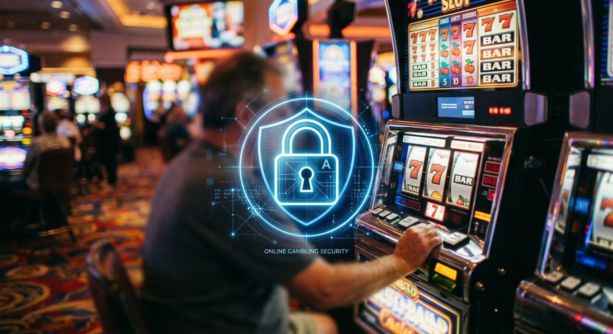

Casino Senza Documenti: Guida Completa ai Migliori Siti 2024
Il panorama del gioco d'azzardo digitale in Italia sta vivendo una trasformazione radicale, spinta dalla richiesta di una maggiore privacy e velocità d'esecuzione. Negli ultimi anni, il concetto di casino senza documenti è diventato un punto di riferimento per i giocatori che desiderano evitare le lunghe e tediose attese legate alla verifica dell'identità. Questa guida esplora in dettaglio come funzionano queste piattaforme, quali sono i rischi e i vantaggi, e come scegliere i portali più affidabili sul mercato internazionale.
Le piattaforme che permettono di giocare senza inviare immediatamente scansioni di carte d'identità o bollette domestiche rispondono a una necessità specifica: l'immediatezza. In un mondo digitale dove ogni secondo conta, l'utente medio non vuole attendere 48 o 72 ore per l'approvazione del profilo prima di poter testare una slot machine o un tavolo di blackjack. Navigare in un casino senza documenti permette di saltare questo passaggio burocratico iniziale, offrendo un'esperienza di gioco fluida e orientata all'utente.
Tuttavia, è fondamentale distinguere tra siti che operano in totale anonimato e quelli che semplicemente posticipano la verifica o utilizzano sistemi tecnologici avanzati per confermare l'identità del giocatore senza richiedere file cartacei. In questo articolo, analizzeremo le tecnologie sottostanti, dai pagamenti cripto al sistema Pay N Play, fornendo una panoramica completa per chi cerca un'alternativa ai circuiti tradizionali.
Cosa si intende per siti di gioco senza invio di file?
Quando parliamo di un casino senza documenti, ci riferiamo a operatori che non richiedono il caricamento manuale di documenti d'identità (KYC - Know Your Customer) al momento della registrazione o del primo deposito. Tradizionalmente, i casinò online richiedono una copia della carta d'identità, del passaporto o della patente, oltre a una prova di residenza, per conformarsi alle normative antiriciclaggio. Queste procedure di verifica possono essere percepite come invasive e rallentano l'accesso ai giochi.
Questi siti innovativi utilizzano metodi alternativi per garantire la sicurezza delle transazioni. Alcuni si appoggiano a provider di pagamento che hanno già verificato l'utente alla fonte, come nel caso delle banche o dei wallet digitali. Altri, invece, operano esclusivamente tramite criptovalute, dove la natura decentralizzata della blockchain permette di mantenere l'anonimato pur garantendo l'integrità del gioco. In entrambi i casi, l'obiettivo è eliminare lo "scartoffismo" digitale che caratterizza il settore da decenni.
È importante notare che la dicitura "senza documenti" non implica necessariamente un'assenza di regole. Anche i casino senza documenti operano spesso sotto licenze internazionali, come quelle rilasciate da Curacao o dalla MGA (Malta Gaming Authority), che impongono standard di gioco equo e protezione dei dati. La differenza risiede esclusivamente nel metodo di autenticazione dell'utente, rendendo il processo di onboarding istantaneo.
Migliori Casino Senza Documenti: La Classifica Aggiornata

Per aiutare i giocatori italiani a orientarsi, abbiamo selezionato alcune delle piattaforme più performanti dell'anno. Queste scelte si basano sulla velocità dei pagamenti, sulla varietà dei giochi e sulla solidità tecnologica dell'infrastruttura. Scegliere un casino senza documenti affidabile è il primo passo per un'esperienza di gioco sicura e priva di intoppi burocratici.
La tabella seguente confronta le principali caratteristiche di alcuni operatori di punta nel settore:
| Brand | Bonus di Benvenuto | Vantaggio Principale | Payout Medio |
|---|---|---|---|
| Millioner | 100% fino a 500€ + 200 giri gratis | Preleva senza attendere il KYC | 97.5% |
| Roulettino | Fino a 1000€ in bonus cashback | Interfaccia ottimizzata per mobile | 96.8% |
| Wyns | Pacchetto di benvenuto su 3 depositi | Supporto Criptovalute esteso | 98.2% |
| Kinbet | Bonus esclusivo per scommesse e casino | Nessuna verifica per piccoli prelievi | 96.5% |
| Dragonia | Fino a 2000€ per i nuovi iscritti | Oltre 4000 slot disponibili | 97.1% |
Wild Tokyo - Bonus elevati e prelievi rapidi
Il Wildtokyo Casinò si è rapidamente affermato come una delle destinazioni preferite per chi cerca un casino senza documenti con un tema accattivante. Ispirato alle luci al neon della capitale giapponese, questo operatore offre un'ampia selezione di giochi, dai tavoli live alle slot più moderne. Il punto di forza del Wildtokyo Casinò è la gestione dei pagamenti: grazie all'integrazione di sistemi moderni, è possibile incassare le vincite senza dover passare attraverso estenuanti controlli dell'identità nelle fasi iniziali.
LamaBet - La scelta ideale per le criptovalute
Se il vostro obiettivo è l'anonimato totale, LamaBet rappresenta l'eccellenza tecnologica. Accettando una vasta gamma di asset digitali, tra cui Bitcoin ed Ethereum, permette di gestire il proprio bankroll con una discrezione senza precedenti. Essere un casino senza documenti significa, in questo caso, permettere all'utente di registrarsi solo con un'email e un portafoglio elettronico, garantendo transazioni quasi istantanee e una sicurezza crittografica di alto livello.
Mr. Pacho - Interfaccia moderna e gamification
Mr. Pacho rompe gli schemi tradizionali del gambling online proponendo un'esperienza di gioco immersiva. Non è solo un casino senza documenti, ma un portale dove ogni puntata contribuisce a una progressione in stile videogioco. La procedura di registrazione è snella, studiata appositamente per chi non vuole perdere tempo. La grafica vibrante e i bonus ricorrenti rendono la permanenza su questa piattaforma estremamente piacevole per ogni tipo di giocatore.
Come Funzionano i Casino Senza Documenti e Registrazione

Il funzionamento di un casino senza documenti si basa su protocolli di scambio dati tra il sito di gioco e il fornitore di servizi finanziari. Invece di inviare una foto del passaporto, l'utente autentica la propria identità tramite la propria banca o un intermediario autorizzato. Questo processo avviene in background, senza che il giocatore debba caricare alcun file. È una rivoluzione tecnologica che mette la protezione dei dati e la comodità al primo posto.
In molti casi, questi siti sono definiti "No Account Casinos". Ciò significa che non esiste nemmeno un modulo di registrazione tradizionale. Il conto di gioco viene creato automaticamente nel momento in cui viene effettuato il primo deposito. Il denaro viene "collegato" all'identificativo unico della transazione, permettendo all'utente di chiudere il browser e ritrovare il proprio saldo al ritorno, semplicemente effettuando un nuovo accesso tramite il metodo di pagamento scelto.
Il sistema Pay N Play (Trustly)
La tecnologia leader in questo ambito è senza dubbio il Pay N Play, sviluppato da Trustly. Questo sistema permette di depositare e giocare istantaneamente utilizzando le proprie credenziali di home banking. Trustly funge da ponte: preleva le informazioni necessarie per la conformità legale direttamente dalla banca del giocatore e le trasmette in modo sicuro al casinò. In questo modo, l'esperienza nel casino senza documenti diventa veloce quanto un normale acquisto online, eliminando totalmente la necessità di inviare file manualmente.
Secondo Wikipedia, Trustly è uno dei metodi più sicuri per le transazioni online in Europa, essendo autorizzato come istituto di pagamento dall'autorità di vigilanza svedese. Questo garantisce che, nonostante la rapidità, la sicurezza del giocatore non venga mai compromessa.
L'uso dello SPID nei siti ADM
Anche in Italia, l'Agenzia delle Dogane e dei Monopoli (ADM) sta iniziando a comprendere il valore della semplificazione. L'introduzione dello SPID (Sistema Pubblico di Identità Digitale) come metodo di accesso ai siti di gioco è un passo avanti verso il concetto di casino senza documenti in ambito legale nazionale. Utilizzando lo SPID, il giocatore conferma la propria identità in pochi secondi, evitando di dover scansionare documenti. Sebbene non sia ancora diffuso come il sistema Pay N Play internazionale, rappresenta il futuro del gioco regolamentato in Italia.
La procedura KYC: perché alcuni operatori la evitano?

La sigla KYC sta per "Know Your Customer" ed è un obbligo legale per la maggior parte delle istituzioni finanziarie. Tuttavia, nel settore del gioco d'azzardo, questa procedura è spesso vista come un ostacolo. Molti operatori decidono di operare come casino senza documenti o con KYC semplificato per ridurre l'abbandono degli utenti. Statisticamente, una percentuale significativa di giocatori decide di non completare la registrazione se costretta a cercare, scansionare e inviare documenti sensibili entro pochi minuti dall'iscrizione.
Evitare la procedura di verifica manuale non significa ignorare la legge, ma piuttosto automatizzarla. Gli operatori che investono in tecnologie di verifica automatica riescono a processare i dati in tempo reale, garantendo la conformità alle norme antiriciclaggio senza disturbare l'utente. Questo approccio è vantaggioso per entrambe le parti: il casinò ottiene più clienti attivi, e il giocatore gode di un accesso immediato ai tavoli da gioco e, soprattutto, ai propri prelievi.
"No documents" = no KYC?

È un errore comune pensare che un casino senza documenti operi in un vuoto legislativo totale. Nella maggior parte dei casi, il KYC esiste ancora, ma è silente o basato sul rischio. Ad esempio, un operatore potrebbe permettere depositi e prelievi rapidi fino a una certa soglia (ad esempio 2.000€) senza chiedere nulla. Superata tale cifra, per obblighi internazionali, potrebbe scattare una richiesta di verifica. Tuttavia, per il giocatore occasionale, l'esperienza rimane quella di un gioco senza intoppi burocratici.
Inoltre, l'uso di Bitcoin e altre valute digitali sposta la responsabilità della verifica sull'exchange di provenienza. Poiché l'utente è già stato verificato per acquistare criptovalute, il casino senza documenti può permettersi di trattare la transazione come sicura e legittima. Questo è il motivo per cui i cosiddetti "Crypto Casinos" sono oggi i principali attori in questo mercato di nicchia.
Vantaggi di giocare su piattaforme ad accesso immediato
Perché un utente dovrebbe preferire un casino senza documenti rispetto a un grande operatore istituzionale? I motivi sono molteplici e toccano diversi aspetti della psicologia del giocatore moderno. In primo luogo, la privacy: non tutti si sentono a proprio agio nel condividere foto dei propri documenti d'identità con server situati in giurisdizioni estere. Meno dati vengono condivisi, minore è il rischio di furto d'identità in caso di violazioni della sicurezza dei dati.
- Velocità estrema: registrazione e deposito avvengono in meno di 60 secondi.
- Prelievi in tempo reale: senza la verifica manuale, i pagamenti vengono spesso elaborati istantaneamente dai sistemi automatizzati.
- Maggiore discrezione: le transazioni spesso non riportano il nome del casinò sull'estratto conto bancario.
- Accesso globale: queste piattaforme accolgono spesso giocatori da diverse nazioni con minori restrizioni geografiche.
Questi vantaggi rendono l'esperienza di gioco molto più vicina a quella di un casinò fisico, dove si entra, si cambiano i contanti in fiches e si gioca immediatamente. Riprodurre questa semplicità nel mondo digitale è la missione principale di ogni casino senza documenti di successo.
Perché molti utenti italiani evitano la verifica dell'identità
Il pubblico italiano è storicamente molto attento alla propria privacy, specialmente quando si tratta di attività legate all'intrattenimento finanziario. Molti utenti cercano un casino senza documenti perché temono che le proprie informazioni possano essere utilizzate per scopi di marketing aggressivo o, peggio, che possano finire nelle mani sbagliate. La sfiducia nei confronti dei sistemi di archiviazione dati centralizzati spinge molti verso soluzioni più snelle e decentralizzate.
Inoltre, c'è un fattore di praticità non trascurabile. Molti giocatori amano testare diverse piattaforme prima di stabilirsi su una preferita. Dover ripetere la procedura di verifica su dieci siti diversi è un onere che scoraggia la curiosità. Un casino senza documenti permette di esplorare nuove librerie di giochi e nuovi bonus con la stessa facilità con cui si cambia canale in TV, rendendo il mercato del gioco più dinamico e competitivo.
Metodi di Pagamento per Transazioni Anonime e Veloci
Il cuore tecnologico di un casino senza documenti risiede nei suoi metodi di pagamento. Senza un sistema di transazione efficiente, il concetto stesso di gioco immediato crollerebbe. Oggi i giocatori hanno a disposizione una varietà di strumenti che bilanciano sicurezza, velocità e riservatezza in modo eccellente.
Criptovalute: Bitcoin e l'anonimato totale
L'uso di Bitcoin ha rivoluzionato il concetto di casino senza documenti. Quando si deposita tramite criptovaluta, l'unica informazione scambiata tra l'utente e l'operatore è l'indirizzo del wallet. Non ci sono nomi, cognomi o indirizzi fisici collegati direttamente alla transazione visibile dal casinò. Questo garantisce un livello di anonimato che nessun altro metodo di pagamento può offrire. Inoltre, i prelievi in cripto non devono attendere i tempi tecnici dei circuiti bancari, arrivando a destinazione in pochi minuti.
Portafogli Elettronici e Voucher
Oltre alle cripto, molti si affidano a portafogli elettronici come Revolut o Jeton. Questi servizi permettono di fungere da scudo tra la banca principale e il casinò. Altri strumenti molto popolari in un casino senza documenti sono i voucher prepagati, come Paysafecard o Neosurf. Acquistando un codice in contanti in un punto vendita fisico e inserendolo sul sito di gioco, l'utente può ricaricare il proprio conto senza lasciare alcuna traccia digitale dei propri dati bancari sul portale di gioco.
Sicurezza e Legalità: a cosa prestare attenzione?
Giocare su un casino senza documenti non significa rinunciare alla sicurezza. Tuttavia, è necessario essere più accorti. Poiché molti di questi operatori non possiedono una licenza ADM, ma agiscono sotto licenze internazionali (Curacao, Kahnawake), il giocatore deve verificare autonomamente la reputazione del sito. Un operatore serio mostrerà chiaramente i loghi delle autorità di regolamentazione e utilizzerà la crittografia SSL per proteggere le comunicazioni.
Un aspetto critico riguarda la protezione dei fondi. È consigliabile scegliere piattaforme che godono di buone recensioni su portali indipendenti e che collaborano con fornitori di software rinomati (come NetEnt, Microgaming o Evolution Gaming). La presenza di questi giganti dell'industria è spesso sinonimo di garanzia, poiché questi provider non offrono i propri giochi a siti palesemente truffaldini.
Per ulteriori informazioni sulla regolamentazione del gioco in Europa, è possibile consultare le linee guida fornite dalla Malta Gaming Authority, che stabilisce standard elevati per la protezione dei consumatori.
Rischi e Considerazioni di Sicurezza
Nonostante i numerosi vantaggi, approcciarsi a un casino senza documenti comporta dei rischi che non vanno sottovalutati. Il principale è la difficoltà di risolvere dispute legali se l'operatore ha sede in un paradiso fiscale lontano dall'Unione Europea. Se un prelievo viene bloccato ingiustamente, le tutele per il cittadino italiano sono inferiori rispetto a quelle offerte da un sito ADM. Per questo motivo, è vitale giocare solo su piattaforme consigliate da esperti del settore.
Un altro rischio è legato al gioco d'azzardo responsabile. Le procedure di verifica dell'identità servono anche a prevenire l'accesso ai minori e a identificare soggetti con problemi di dipendenza che si sono auto-esclusi. In un casino senza documenti, questi filtri potrebbero essere meno stringenti. È responsabilità dell'utente mantenere un approccio consapevole e utilizzare gli strumenti di auto-limitazione messi a disposizione dai siti stessi.
Tipologie di Bonus Disponibili Senza Verifica
L'attrattiva di un casino senza documenti non si ferma alla velocità, ma si estende ai generosi bonus offerti. Non dovendo investire pesantemente in dipartimenti di verifica manuale, questi operatori possono permettersi di reinvestire le risorse in promozioni più ricche. I nuovi giocatori possono trovare bonus sul deposito, cashback settimanali e sistemi di fedeltà molto vantaggiosi.
Un elemento molto ricercato è il Bonus Crab, una funzione di gamification presente in molti siti moderni. Consente ai giocatori di "pescare" premi aggiuntivi, come bonus in denaro o giri gratuiti, aggiungendo un livello di divertimento extra oltre alle classiche slot machine. Questi incentivi rendono l'esperienza in un casino senza documenti non solo rapida, ma anche economicamente stimolante per chi sa gestire correttamente i requisiti di scommessa (wagering).
Giri Gratis senza documenti
Uno dei bonus più amati dagli italiani sono i giri gratis senza documenti. Molte piattaforme offrono 50, 100 o anche 200 free spins come parte del pacchetto di benvenuto. La cosa straordinaria è che in un casino senza documenti, questi giri possono essere attivati immediatamente dopo il deposito, permettendo di testare le slot più famose (come Starburst o Book of Dead) senza dover aspettare che un operatore umano approvi i vostri documenti. Questo tipo di offerta è il biglietto da visita ideale per chi vuole un divertimento immediato.
Spesso i giri gratuiti sono legati a specifiche slot in promozione, ma rappresentano comunque un ottimo modo per accumulare una piccola vincita iniziale. Ricordate sempre di controllare se le vincite da questi giri hanno un tetto massimo di prelievo e quali sono le condizioni per trasformare il saldo bonus in denaro reale prelevabile.
888Casino e WinBet: Alternative Istituzionali
Mentre i siti internazionali dominano il settore senza KYC, è giusto menzionare operatori come 888Casino e WinBet. Questi brand rappresentano l'altra faccia della medaglia: la sicurezza istituzionale. Pur richiedendo la verifica dell'identità (spesso facilitata e molto rapida), offrono garanzie legali totali per il mercato italiano. Sebbene non siano classificabili come un puro casino senza documenti, hanno ottimizzato i loro processi per rendere la burocrazia il meno fastidiosa possibile.
In particolare, 888Casino è noto per la sua piattaforma proprietaria e per una trasparenza assoluta nei pagamenti. WinBet, d'altra parte, offre un'ampia gamma di scommesse sportive integrate. Chi non si sente pronto a fare il salto verso i siti completamente anonimi può trovare in questi operatori un eccellente compromesso tra innovazione e rigore normativo.
Giocare senza scartoffie: l'evoluzione del mercato
L'espressione "giocare senza scartoffie" sta diventando un mantra per la nuova generazione di utenti. Il mercato si sta spostando verso un modello "user-centric", dove l'attrito tra l'utente e il prodotto deve essere ridotto a zero. Un casino senza documenti che non riesce a offrire un'interfaccia fluida e una registrazione in pochi clic è destinato a scomparire. L'integrazione di intelligenza artificiale per l'analisi del rischio e di protocolli biometrici sarà il prossimo passo in questa evoluzione tecnologica.
In questo contesto, brand come Astromania Casinò e Diva Spin Casinò stanno tracciando la strada, offrendo piattaforme dove il design incontra la funzionalità estrema. Anche Lunubet Casinò e Spinempire Casinò si distinguono per l'assenza di richieste burocratiche superflue, permettendo agli utenti di concentrarsi solo sull'emozione del gioco. La tendenza è chiara: la libertà digitale è la priorità assoluta per il futuro del gambling online.
Giocare senza registrazione è top: la user experience
L'affermazione "giocare senza registrazione è top" non è solo uno slogan, ma riflette un cambiamento radicale nella user experience (UX). I siti che permettono l'accesso diretto tramite deposito non solo risparmiano tempo, ma eliminano anche la necessità di ricordare decine di password diverse. In un casino senza documenti, la vostra "chiave di accesso" è il vostro metodo di pagamento. Questo semplifica enormemente la vita a chi gioca da dispositivi mobili, dove compilare lunghi moduli è spesso frustrante.
Inoltre, l'esperienza di gioco su siti come Boomerangbet Casino, VegasHero Casinò e Wonderluck Casinò è ottimizzata per essere "mobile-first". Questi operatori sanno che la maggior parte degli utenti gioca durante brevi pause o mentre è in movimento. Offrire un casino senza documenti significa permettere a questi utenti di entrare in azione nel tempo di una fermata della metropolitana, garantendo lo stesso livello di intrattenimento di un PC desktop.
📌 Consiglio di Luca Moretti, il nostro scrittore esperto:
"Nel corso della mia carriera ho analizzato centinaia di piattaforme. Il mio consiglio per chi approccia un casino senza documenti è di iniziare sempre con un deposito contenuto. Testate non solo i giochi, ma anche la velocità del supporto clienti e, soprattutto, la reattività del sistema di prelievo. Anche se il sito promette anonimato e rapidità, la prova del nove rimane sempre il primo incasso. Assicuratevi che il sito abbia una connessione crittografata (l'icona del lucchetto nella barra degli indirizzi) e non esitate a utilizzare le criptovalute se cercate il massimo livello di privacy oggi disponibile sul mercato."
Conclusioni: il futuro del gioco online in Italia
Il successo del casino senza documenti è il segnale di un'esigenza di cambiamento che le autorità di regolamentazione non possono più ignorare. Sebbene il modello ADM offra tutele indiscutibili, la rigidità delle sue procedure spinge inevitabilmente una parte di utenza verso mercati internazionali più agili. Il futuro vedrà probabilmente una convergenza, dove anche i siti autorizzati in Italia adotteranno tecnologie come lo SPID in modo più pervasivo per eliminare la richiesta manuale di file.
In conclusione, navigare in un casino senza documenti rappresenta una scelta di libertà e praticità. Che preferiate l'anonimato del Bitcoin su LamaBet o l'esperienza moderna di Millioner, l'importante è giocare sempre con responsabilità. Il gioco d'azzardo deve rimanere una forma di intrattenimento, e la tecnologia "no-doc" è qui per rendere questo divertimento più accessibile, veloce e sicuro che mai.
Domande Frequenti (FAQ)
È legale giocare in un casino senza documenti?
Da un punto di vista dell'utente, non è illegale accedere a questi siti, ma bisogna essere consapevoli che operano sotto licenze estere. Questo significa che, in caso di problemi, non si gode della protezione diretta dell'autorità italiana (ADM). Tuttavia, molti di questi siti sono operatori internazionali stimati e sicuri.
Quali sono i migliori siti senza verifica nel 2024?
Tra i più affidabili segnaliamo Millioner, Roulettino, e Wyns. Anche piattaforme come Wildtokyo Casinò e Kinbet offrono eccellenti condizioni per chi desidera giocare senza inviare documenti immediatamente.
Posso prelevare le mie vincite senza inviare file?
Sì, in un casino senza documenti è possibile prelevare le vincite, specialmente se si utilizzano criptovalute o sistemi come Trustly. Alcuni operatori potrebbero richiedere una verifica solo al superamento di soglie di prelievo molto elevate, ma per la maggior parte delle transazioni standard, il processo è automatizzato e immediato.
I bonus sono validi anche senza la verifica del conto?
Assolutamente sì. I bonus di benvenuto, i giri gratuiti e il cashback sono attivati automaticamente al momento del deposito. La mancanza di verifica documentale iniziale non preclude in alcun modo l'accesso alle promozioni, anzi, spesso i bonus in queste piattaforme sono più generosi della media.
Cosa succede se il casinò mi chiede i documenti all'improvviso?
Può capitare che, per motivi di sicurezza o controlli a campione, un casino senza documenti richieda una prova d'identità. In questo caso, dovrete fornire quanto richiesto per sbloccare il conto. Tuttavia, scegliendo operatori seri e utilizzando metodi di pagamento certificati, questa eventualità è ridotta al minimo indispensabile per la legge.